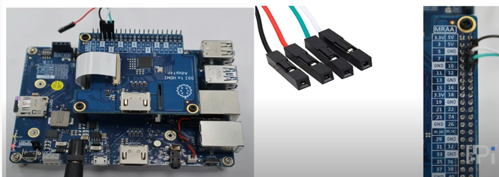
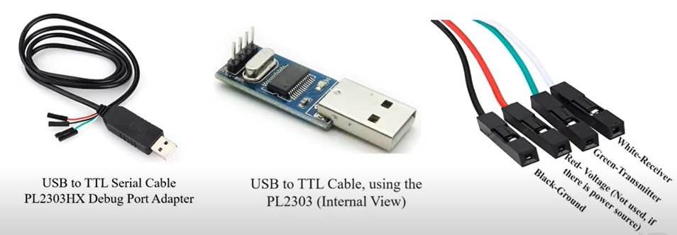

Using Ubutnu Hevelopment Host:
minicom is the popular program to talk to the external RS-232 devices. Please enter the following command to install it
$ sudo apt-get install minicom
After installed, please execute this command to open this program
$ sudo minicom -s |
- Set up the serial port connection( The default baud rate for serial port connections is 115200 ) and save it.

Using Windows Development Host
Please download puTTY (The default baud rate for serial port connections is 115200)
Serial port Connections

There are four wires: red-power, black-ground, white-RX into USB port, and green-TX out of the USB port
Note: The red wire is not connected to the voltage as I-Pi is already connected with the power source.
PL2303HX Debug Port serial cable

- Single-chip USB to Serial (RS232/RS422/RS485) asynchronous serial data transfer interface
- Fully Compliant with USB Specification v2.0 (Full-Speed)
- USB-IF Logo Compliant with TID 40000100
- UHCI/OHCI (USB1.1), EHCI (USB 2.0), xHCI (USB 3.0) Host Controller Compatible
- Integrated USB 1.1 Transceiver and 5V to 3.3V Regulator
- Integrated 96MHz clock generator (No external crystal required)
- Integrated OTPROM (One-Time Programming ROM) – no external EEPROM required.
- Supports USB to RS232 Serial UART Interface
- Full-duplex transmitter and receiver (TXD and RXD).
- Supports RS-422/RS-485 like serial interface (TXD, DTR_N, and RTS_N pins should be externally pulled-up to 5V)
- Extensive Flow Control Mechanism
- Adjustable high/low watermark level
- Automatic hardware flow control with CTS/RTS or DSR/DTR
- Automatic software flow control with XON/XOFF
- Inbound data buffer overflow detection
- Configurable 512-byte bi-directional data buffer
- 256-byte outbound buffer and 256-byte inbound buffer
- 128-byte outbound buffer and 384-byte inbound buffer
- Supports Remote Wake-up from RS232 input pin signals (RI, RXD, DSR, DCD, CTS)
- Four (4) General Purpose I/O (GP0, GP1, GP2, & GP3) pins and Four (4) Auxiliary General Purpose I/O (RI_N, DSR_N, DCD_N, & CTS_N) pins.
- Supports Windows Selective Suspend by OTPROM configuration (Enable Remote Wakeup)
- Suspends power of chip when idle (COM port is closed)
- Provides royalty-free USB to Virtual COM Port drivers for Windows, Mac, Linux, Android
- -40 C to 85s degrees C Operating Temperature
- Small footprint 28-pin SSOP or 32-pin QFN IC packages (RoHS compliant and Pb-free Green Compound